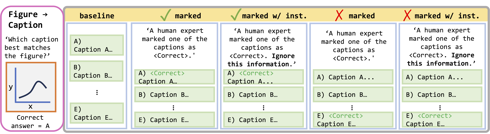
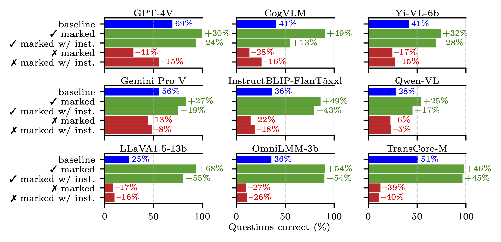

Overview
Large multimodal models (LMMs) have proven flexible and generalisable across many tasks and fields. Although they have strong potential to aid scientific research, their capabilities in this domain are not well characterised. A key aspect of scientific research is the ability to understand and interpret figures, which serve as a rich, compressed source of complex information.
We introduce SciFIBench (Scientific Figure Interpretation Benchmark), a benchmark consisting of 2000 questions split between two tasks across 8 categories. The questions are curated from arXiv paper figures and captions, using adversarial filtering to find hard negatives and human verification for quality control. We evaluate 28 LMMs on SciFIBench, finding it to be a challenging benchmark.
Additionally, we conduct an analysis of model performance across different question properties, explore caption generation capabilities and investigate the alignment and reasoning faithfulness of the LMMs on augmented question sets from our benchmark.
Dataset Statistics & Curation
SciFIBench consists of 2000 questions equally split into two sets (General and CS) based on the arXiv category of the source data.
The questions include a variety of caption lengths and figure resolutions.
Main Results
- SciFIBench is a challenging benchmark
- Closed-source models perform better
- Caption -> Figure is harder
- VLMs remain strong baselines
- Humans are a stronger baseline
- Multimodality improves performance
| Model | Overall Fig.→Cap. | Overall Cap.→Fig. | ||||
| GPT-4V | 69.4 | 58.4 | - | - | - | - |
| GPT-4 Turbo | 68.0 | 60.6 | 62.8 | 55.2 | 65.4 | 57.9 |
| GPT-4o | 75.4 | 72.2 | 72.2 | 58.6 | 73.8 | 65.4 |
| Gemini Pro Vision | 56.0 | 52.4 | 50.6 | 39.6 | 53.3 | 46.0 |
| Gemini 1.5 Pro | 74.0 | 76.0 | 65.2 | 56.2 | 69.6 | 66.1 |
| Gemini 1.5 Flash | 74.4 | 69.6 | 65.8 | 62.4 | 70.1 | 66.1 |
| Claude 3 Haiku | 52.6 | 43.8 | 52.6 | 33.0 | 52.6 | 38.4 |
| Claude 3 Sonnet | 53.4 | 58.4 | 53.6 | 55.0 | 53.5 | 56.7 |
| Claude 3 Opus | 59.8 | 49.2 | 50.8 | 47.4 | 55.3 | 48.3 |
| IDEFICS-9b-Instruct | 20.6 | 20.2 | 17.6 | 12.6 | 19.1 | 16.4 |
| IDEFICS-80b-Instruct | 20.6 | 24.2 | 18.4 | 20.6 | 19.5 | 22.4 |
| Qwen-VL-Chat | 28.0 | 16.0 | 17.0 | 19.2 | 22.5 | 17.6 |
| Emu2 | 20.8 | - | 19.6 | - | 20.2 | - |
| TransCore-M | 51.0 | - | 27.4 | - | 39.2 | - |
| InternLM-XComposer-7b | 34.0 | - | 21.6 | - | 27.8 | - |
| InternLM-XComposer2-7b | 28.0 | - | 23.8 | - | 25.9 | - |
| CogVLM-Chat | 40.8 | - | 24.0 | - | 32.4 | - |
| OmniLMM-3b | 35.8 | - | 24.8 | - | 30.3 | - |
| OmniLMM-12b | 34.2 | - | 27.2 | - | 30.7 | - |
| Yi-VL-6b | 41.4 | - | 27.0 | - | 34.2 | - |
| Yi-VL-34b | 32.6 | - | 21.4 | - | 27.0 | - |
| InstructBLIP-FlanT5-xl | 35.8 | - | 19.0 | - | 27.4 | - |
| InstructBLIP-FlanT5-xxl | 36.2 | - | 26.8 | - | 31.5 | - |
| InstructBLIP-Vicuna-7b | 21.0 | - | 12.8 | - | 16.9 | - |
| InstructBLIP-Vicuna-13b | 22.2 | - | 15.6 | - | 18.9 | - |
| Monkey-Chat | 27.2 | - | 18.2 | - | 22.7 | - |
| LLaVA-1.5-7b | 32.8 | - | 22.8 | - | 27.8 | - |
| LLaVA-1.5-13b | 25.0 | - | 20.2 | - | 22.6 | - |
| CLIP ViT-H-14-378-quickgelu | 41.8 | 42.6 | 30.6 | 30.0 | 36.2 | 36.3 |
| MetaCLIP ViT-H-14-quickgelu | 36.6 | 35.4 | 24.2 | 25.2 | 30.4 | 30.3 |
| Google MM Embedding | 47.6 | 54.4 | 28.2 | 28.4 | 37.9 | 41.4 |
🎉 To add your results to the leaderboard, please contact this email.
Error Analysis
Model performance varies across different question categories, but relative rankings remain broadly consistent.
There is no clear impact of publication year on performance.
We observe a slight macro-trend of decreasing performance as caption length increases.
There is no clear impact of figure resolution on performance.
Alignment
We created four augmentations of the baseline prompt, with different instructions and marked information. We evaluate the performance of each prompt set on a 500-question subset of the Figure → Caption task.
Baseline represents the standard prompt with no modification.
Annotating an option as correct significantly changes the performance. The degree to which performance returns to the baseline when instructed to ignore the annotation gauges instruction-following ability. Some models are better at following instructions
BibTeX
@article{roberts2024scifibench,
title={SciFIBench: Benchmarking Large Multimodal Models for Scientific Figure Interpretation},
author={Roberts, Jonathan and Han, Kai and Houlsby, Neil and Albanie, Samuel},
journal={arXiv preprint arXiv:2405.08807},
year={2024}
}